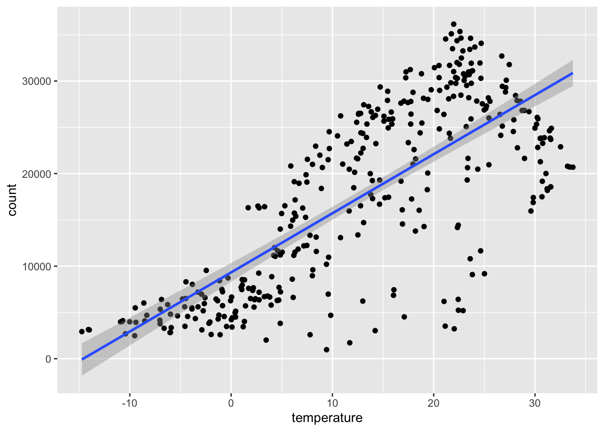
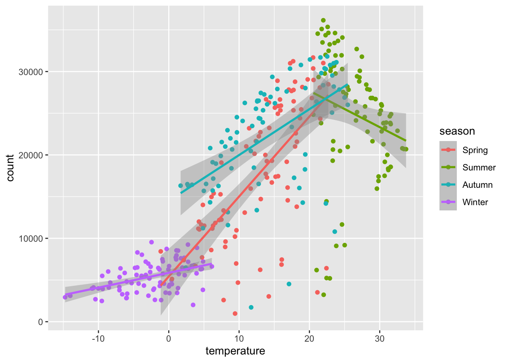
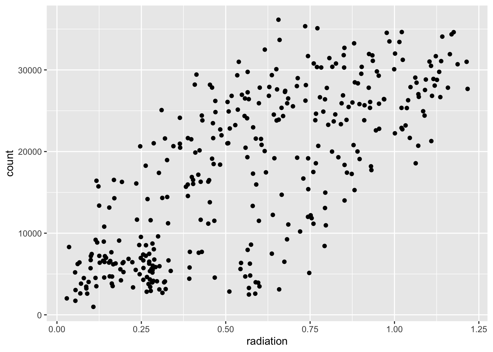

The following portion (up to Extension) is leftovers from Homework Assignment 9.
#Basic Modeling Practice
To kick things off, we’ll read in a data set from the UCI Machine Learning Repository. Note that some intervention was needed in order to read in the file properly.
#Install, if necessarylibrary(tidyverse)
── Attaching core tidyverse packages ──────────────────────── tidyverse 2.0.0 ──
✔ dplyr 1.2.1 ✔ readr 2.2.0
✔ forcats 1.0.1 ✔ stringr 1.6.0
✔ ggplot2 4.0.3 ✔ tibble 3.3.1
✔ lubridate 1.9.5 ✔ tidyr 1.3.2
✔ purrr 1.2.2
── Conflicts ────────────────────────────────────────── tidyverse_conflicts() ──
✖ dplyr::filter() masks stats::filter()
✖ dplyr::lag() masks stats::lag()
ℹ Use the conflicted package (<http://conflicted.r-lib.org/>) to force all conflicts to become errors
library(ggplot2)library(rsample)#The fileEncoding argument is required here; without it, an error occurs.bikes_data=read.csv("https://www4.stat.ncsu.edu/~online/datasets/SeoulBikeData.csv",fileEncoding ="latin1")
##EDA
Now, we can perform some EDA procedures on this data. We start with checking for any missing values.
So far so good; no missing values have been found in any of these variables.
Next, we can check the column types and the values within these columns using the summary function:
summary(bikes_data)
Date Rented.Bike.Count Hour Temperature..C.
Length :8760 Min. : 0.0 Min. : 0.00 Min. :-17.80
N.unique : 365 1st Qu.: 191.0 1st Qu.: 5.75 1st Qu.: 3.50
N.blank : 0 Median : 504.5 Median :11.50 Median : 13.70
Min.nchar: 10 Mean : 704.6 Mean :11.50 Mean : 12.88
Max.nchar: 10 3rd Qu.:1065.2 3rd Qu.:17.25 3rd Qu.: 22.50
Max. :3556.0 Max. :23.00 Max. : 39.40
Humidity... Wind.speed..m.s. Visibility..10m. Dew.point.temperature..C.
Min. : 0.00 Min. :0.000 Min. : 27 Min. :-30.600
1st Qu.:42.00 1st Qu.:0.900 1st Qu.: 940 1st Qu.: -4.700
Median :57.00 Median :1.500 Median :1698 Median : 5.100
Mean :58.23 Mean :1.725 Mean :1437 Mean : 4.074
3rd Qu.:74.00 3rd Qu.:2.300 3rd Qu.:2000 3rd Qu.: 14.800
Max. :98.00 Max. :7.400 Max. :2000 Max. : 27.200
Solar.Radiation..MJ.m2. Rainfall.mm. Snowfall..cm. Seasons
Min. :0.0000 Min. : 0.0000 Min. :0.00000 Length :8760
1st Qu.:0.0000 1st Qu.: 0.0000 1st Qu.:0.00000 N.unique : 4
Median :0.0100 Median : 0.0000 Median :0.00000 N.blank : 0
Mean :0.5691 Mean : 0.1487 Mean :0.07507 Min.nchar: 6
3rd Qu.:0.9300 3rd Qu.: 0.0000 3rd Qu.:0.00000 Max.nchar: 6
Max. :3.5200 Max. :35.0000 Max. :8.80000
Holiday Functioning.Day
Length :8760 Length :8760
N.unique : 2 N.unique : 2
N.blank : 0 N.blank : 0
Min.nchar: 7 Min.nchar: 2
Max.nchar: 10 Max.nchar: 3
Again, everything appears to make sense. As a precaution, we’ll make some adjustments to these variables, including but not limited to renaming them.
From the lubridate package, we’ll convert the Date variable, which is initally a character-type variable, into an actual date that can be used for our analysis.
bikes_data$Date =dmy(bikes_data$Date)
The remaining character variables (Seasons, Holiday, Functioning Day) will now be turned into categorical variables.
`summarise()` has regrouped the output.
ℹ Summaries were computed grouped by holiday and functioning.
ℹ Output is grouped by holiday.
ℹ Use `summarise(.groups = "drop_last")` to silence this message.
ℹ Use `summarise(.by = c(holiday, functioning))` for per-operation grouping
(`?dplyr::dplyr_by`) instead.
# A tibble: 4 × 3
# Groups: holiday [2]
holiday functioning count
<fct> <fct> <int>
1 Holiday No 24
2 Holiday Yes 408
3 No Holiday No 271
4 No Holiday Yes 8057
#Summarizing data across hours. First, grouping by date, seasons and holiday. Second, finding sum of bike-count, rainfall, and snowfall. Third, finding the mean of all other weather-related variables.new_bikes_data <- real_bikes_data |>group_by(date,season,holiday) |>summarize("count"=sum(count),"rainfall"=sum(rainfall),"snowfall"=sum(snowfall),"temperature"=mean(temperature),"humidity"=mean(humidity),"windspeed"=mean(wind_speed),"visibility"=mean(visibility),"dewpoint"=mean(dew_point),"radiation"=mean(radiation))
`summarise()` has regrouped the output.
ℹ Summaries were computed grouped by date, season, and holiday.
ℹ Output is grouped by date and season.
ℹ Use `summarise(.groups = "drop_last")` to silence this message.
ℹ Use `summarise(.by = c(date, season, holiday))` for per-operation grouping
(`?dplyr::dplyr_by`) instead.
Recreating basic summary stats and creating plots to explore relationships. Correlations between numeric variables will be included.
#Use new data frame to create basic summary stats and make plots to explore potential relationship. Special attention to correlation between all numeric variables.new_bikes_data |>summarize(mean_count =mean(count),mean_temp =mean(temperature),mean_humidity =mean(humidity))
`summarise()` has regrouped the output.
ℹ Summaries were computed grouped by date and season.
ℹ Output is grouped by date.
ℹ Use `summarise(.groups = "drop_last")` to silence this message.
ℹ Use `summarise(.by = c(date, season))` for per-operation grouping
(`?dplyr::dplyr_by`) instead.
Right off the bat, we see some fairly strong correlation between the rental bike count (our desired response) and temperature, dew point, and radiation. However, there are plenty of places where multicollinearity could exist like the dew point vs. temperature and the dew point vs. humidity. In fact, the highest correlation is within the former pair. These will be demonstrated below.
#Scatterplot of Temperature vs. Total Countggplot(new_bikes_data,aes(x=temperature,y=count))+geom_point() +geom_smooth(method="lm")
`geom_smooth()` using formula = 'y ~ x'

We can see that the predictor that has the strongest correlation with the response (average temperature vs. total count) already violates at least one of the model assumptions (having non-constant variance) when considered as a SLR model. Below, we group each of these by season to determine if that has an effect on the total count.
#Scatterplot of Temperature vs. Total Count by Seasonggplot(new_bikes_data,aes(x=temperature,y=count,color=season))+geom_point() +geom_smooth(method="lm")
`geom_smooth()` using formula = 'y ~ x'

Doing four separate SLR models by season doesn’t appear to make much of a difference, even if considered as an ANCOVA model with the season as the “treatment” and the average temperature as the covariate.
Let’s try using the average radiation, which is the predictor with the second highest correlation with the total count.
#Scatterplot of Radiation vs. TotalCountggplot(new_bikes_data,aes(x=radiation,y=count))+geom_point()

To show that multicollinearity exists amongst the set of predictors, a scatterplot and fitted line between the two predictors with the highest overall correlation is shown below.
We’ll make one more modification to the data set by creating a binary type factor variable for the date that’s based on where it falls on a weekend or not.
#Converting date variable into binary type of categorical variableupdated_bikes_data <- new_bikes_data |>mutate(type_of_day =factor(ifelse(wday(date) %in%c(1,7), "Weekend","Weekday")))new_bikes_train = bikes_train |>mutate(type_of_day =factor(ifelse(wday(date) %in%c(1,7), "Weekend","Weekday")))new_bikes_test = bikes_test |>mutate(type_of_day =factor(ifelse(wday(date) %in%c(1,7), "Weekend","Weekday")))#Isolate numeric variables for standardizingnumvars_one <-sapply(new_bikes_train,is.numeric)numvars_two <-sapply(new_bikes_test,is.numeric)numvars_all <-sapply(updated_bikes_data,is.numeric)
Note that several columns were isolated so we can standardize the numerical variables.
#Standardizing numeric variables for training setscaled_bikes_train <- new_bikes_trainscaled_bikes_train[numvars_one] <-scale(new_bikes_train[numvars_one])#Collecting the mean and sd vectors from the training set scaled_bikes_train_means <-sapply(scaled_bikes_train[numvars_one],mean)scaled_bikes_train_sds <-sapply(scaled_bikes_train[numvars_one],sd)#Same standardizing procedure for testing set, but with the mean and sd of the training setscaled_bikes_test <- new_bikes_testscaled_bikes_test[numvars_two] <-scale(new_bikes_test[numvars_two],center=scaled_bikes_train_means,scale=scaled_bikes_train_sds)
With our data sets scaled, we can fit three type of MLR models using the scaled training set:
an additive MLR model with all the predictors (numerical and categorical)
the same additive MLR model with all predictors plus a few interaction terms
the model from part (ii) along with a couple of quadratic terms
Summaries for each model, including the estimated parameters, are given below.
Based on solely the adjusted \(R^2\), the third model barely has the edge over the second model. However, we’ll look at predictions based on the testing set for each model and evaluate the test RMSE.
Find test set RMSE for each model and determine which model minimizes this value. Use the entire data to fit selected model, and standardize using entire mean and sd for all data.
Strangely, the first model with strictly the main effects barely has the smallest test RMSE here. We’ll use the entire standardized data set to fit that model.